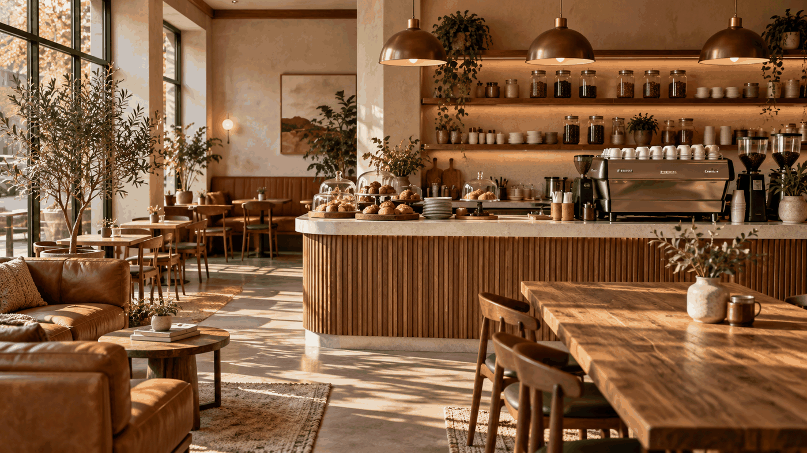
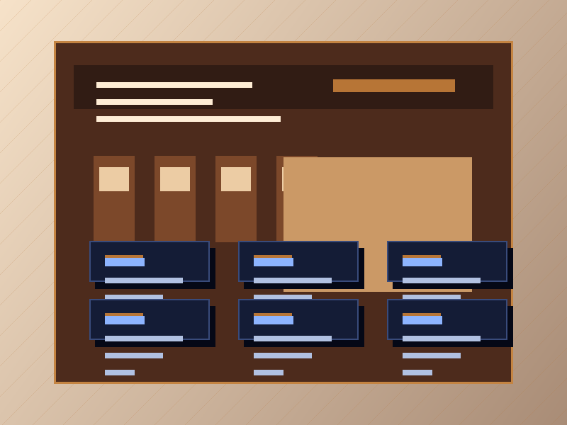
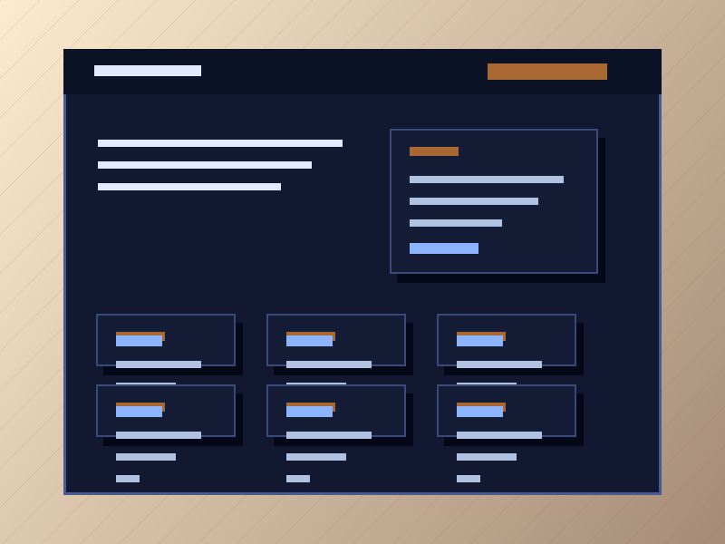

Класична кава
Еспресо, американо, фільтр, капучино та інші базові напої як приклад структури меню без цін.
Міська кав’ярня
Місце для кави, розмов і спокійних ранків
Тиха Кава» — демонстраційний концепт SHYROKO Web Studio, не сайт реального закладу.

Класична кава, авторські напої та десерти для приємних щоденних моментів.
Еспресо, американо, фільтр, капучино та інші базові напої як приклад структури меню без цін.
Сезонні та авторські поєднання смаків, які власник може замінити фактичними позиціями закладу.
Вітрина солодких позицій для ранкової кави, зустрічі або короткої паузи протягом дня.
Легкі ранкові формати для гостей, які хочуть почати день у затишному просторі.
«Тиха Кава» — затишний простір для неквапливих ранків, теплих розмов і приємних зустрічей. Тут кава доповнює атмосферу, а кожна перерва стає маленьким відпочинком.
Простір для першої кави, спокійного початку дня та короткої зупинки перед справами.
Невеликий формат для розмов, роботи з ноутбуком або паузи між зустрічами.
Концепція підкреслює теплий характер району без використання реальної адреси чи історії закладу.
Для неспішного ранку, зустрічі з друзями чи короткої паузи між справами — оберіть свій формат «Тихої Кави».
Влаштуйтеся за затишним столиком, замовте улюблений напій і насолоджуйтеся моментом без поспіху
Для неспішної паузи
Беріть улюблену каву та щось смачне на прогулянку, роботу або в дорогу.
Кава у вашому ритмі
Збирайтеся з друзями для теплих розмов за чашкою кави.
Для приємної компанії
Почніть день зі сніданку, ароматної кави та спокійного настрою.
Ваш добрий початок дня
Кремові, карамельні та шоколадні відтінки створюють спокійний преміальний настрій.
Категорії й добірки подані так, щоб гість швидко зорієнтувався без вигаданих цін.
Окремий блок пояснює походження, обсмаження і способи приготування як місце для фактичних даних власника.
Навігація, CTA та контакти адаптовані для малого екрана без горизонтального прокручування.
Опис зерна, обсмаження та способів приготування є демонстраційним місцем для фактичних даних кав’ярні.
Оберіть напій до настрою, додайте десерт і насолоджуйтеся своєю паузою в «Тихій Каві»
Класична кава чи авторський напій — оберіть те, що хочеться саме зараз.
Розкажіть бариста про свої побажання та за бажанням додайте десерт.
Поки ви обираєте місце, бариста готує ваше замовлення.
Насолоджуйтеся кавою за столиком або візьміть напій із собою.
Тепле світло, аромат кави й затишні деталі — маленькі моменти, заради яких хочеться залишитися довше.

Галерея
Місце біля вікна для неспішної кави, книги або теплої розмови.
Галерея
Улюблений напій, ніжна молочна пінка та увага до кожної деталі.

Галерея
Десерти, що доповнюють каву й додають настрою вашому дню.
У демонстраційному меню представлені класична кава, авторські напої, сніданки та десерти. Наповнення показує, як може виглядати сайт кав’ярні.
Так, у концепції показано два формати: відпочинок у кав’ярні та напої із собою.
У цьому демосайті ціни не зазначені. На сайті реальної кав’ярні тут можна розмістити актуальне меню з цінами.
Цей демосайт не приймає замовлень і бронювань. На реальному сайті можна додати відповідний канал зв’язку.
«Тиха Кава» — демонстраційний концепт SHYROKO Web Studio, а не сайт реального закладу.
SHYROKO WEB STUDIO
Це демонстраційні дані з макета. Перед запуском власник замінює їх фактичними контактами закладу.